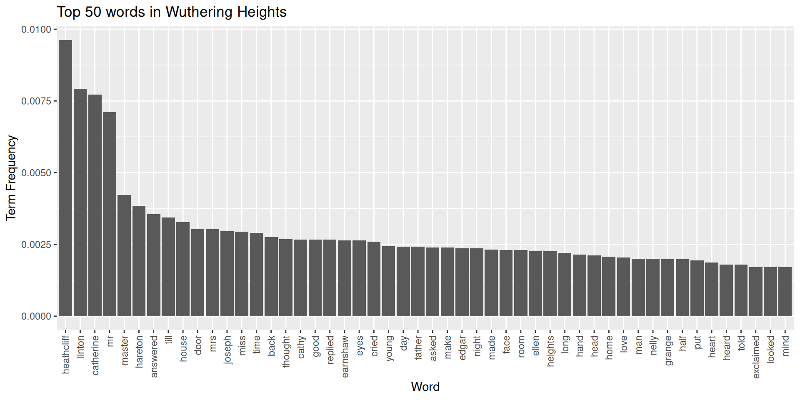
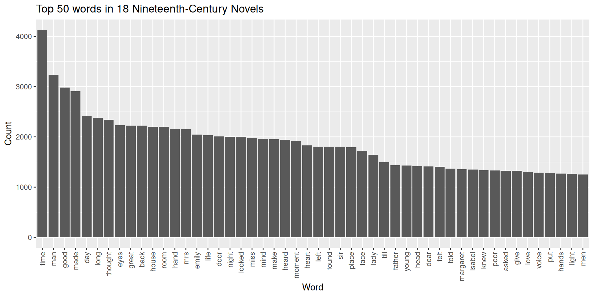
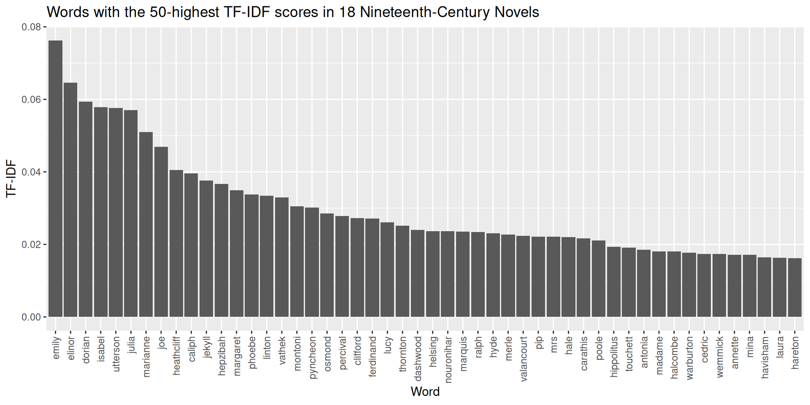

In this lesson, we’ll be preparing a collection of texts for computational analysis. Before we start that work in full, we’re going to load in a file manifest, which will help us a) identify what’s in our collection; and b) keep track of things like the order of texts.
last_name first_name title year genre
1 Beckford William Vathek 1786 G
2 Radcliffe Ann ASicilianRomance 1790 G
3 Radcliffe Ann TheMysteriesofUdolpho 1794 G
4 Lewis Matthew TheMonk 1795 G
5 Austen Jane SenseandSensibility 1811 N
6 Shelley Mary Frankenstein 1818 G
7 Scott Walter Ivanhoe 1820 N
8 Poe EdgarAllen TheNarrativeofArthurGordonPym 1838 N
9 Bronte Emily WutheringHeights 1847 G
10 Hawthorne Nathaniel TheHouseoftheSevenGables 1851 N
11 Gaskell Elizabeth NorthandSouth 1854 N
12 Collins Wilkie TheWomaninWhite 1860 N
13 Dickens Charles GreatExpectations 1861 N
14 James Henry PortraitofaLady 1881 N
15 Stevenson RobertLouis TreasureIsland 1882 N
16 Stevenson RobertLouis JekyllandHyde 1886 G
17 Wilde Oscar ThePictureofDorianGray 1890 G
18 Stoker Bram Dracula 1897 G
As you can see, in addition to the author and title listings, we also have a genre tag. G is for “Gothic” literature, while N is “not Gothic.” Let’s convert the datatype for the genre column into a factor, which will make life easier later on.
manifest$genre <-as.factor(manifest$genre)
15.2 Loading a Corpus
With our metadata loaded, it’s time to bring in our files. We’ll be using files stored in an RDS format, though you could also load straight from a directory with a combination of lapply and readLines.
files <-readRDS("data/C19_novels_raw.rds")
Loading our files like this will create a giant list of vectors, where each vector is a full text file. Those vectors are chunked by paragraph right now, but for our purposes it would be easier if each vector was a single stream of text (like the output of ocr, if you’ll remember). We can collapse them together with paste.
files <-lapply(files, paste, collapse =" ")
From here, we can wrap these files in a special “corpus” object, which the tm package enables (a corpus is a large collection of texts). A tm corpus works somewhat like a database. It has a section for “content”, which contains text data, as well as various metadata sections, which we can populate with additional information about our texts, if we wished. Taken together, these features make it easy to streamline workflows with text data.
To make a corpus with tm, we call the Corpus function, specifying with VectorSource (because our texts are vectors):
library("tm")corpus <-Corpus(VectorSource(files))
Here’s a high-level glimpse at what’s in this object:
library("stringr")str_sub(corpus[[6]]$content, start =1, end =500)
[1] "FRANKENSTEIN: OR, THE MODERN PROMETHEUS. BY MARY W. SHELLEY. PREFACE. The event on which this fiction is founded, has been supposed, by Dr. Darwin, and some of the physiological writers of Germany, as not of impossible occurrence. I shall not be supposed as according the remotest degree of serious faith to such an imagination; yet, in assuming it as the basis of a work of fancy, I have not considered myself as merely weaving a series of supernatural terrors. The event on which the interest "
In this last view, you can see that the text file is still formatted (at least we didn’t have to OCR it!). This formatting is unwieldy and worse, it makes it so we can’t really access the elements that comprise each novel. We’ll need to do more work to preprocess our texts before we can analyze them.
15.3 Preprocessing
Part of preprocessing entails making decisions about the kinds of information we want to know about our data. Knowing what information we want often guides the way we structure data. Put another way: research questions drive preprocessing.
15.3.1 Tokenizing and Bags of Words
For example, it’d be helpful to know how many words are in each novel, which might enable us to study patterns and differences between authors’ styles. To get word counts, we need to split the text vectors into individual words. One way to do this would be to first strip out everything in each novel that isn’t an alphabetic character or a space. Let’s grab one text to experiment with.
From here, it would be easy enough to count the words in a novel by splitting its vector on spaces, removing empty elements in the vector, and calling length on the vector. The end result is what we call a bag of words.
While easy, producing our bag of words this way is a bit clunky. And further, this process can’t handle contractions (“I’m”, “don’t”, “that’s”) or differences in capitalization.
frankenstein[[1]][188:191]
[1] "Midsummer" "Night" "s" "Dream"
Should be:
Midsummer Night's Dream
And
"FRANKENSTEIN", "Frankenstein"
Should be:
"Frankenstein"
Or, even better:
frankenstein
Typically, when we work with text data we want all of our words to be in the same case because this makes it easier to do things like counting operations. Remember that, to a computer, “Word” and “word” are two separate words, and if we want to count them together, we need to pick one version or the other. Making all words lowercase (even proper nouns) is the standard. Doing this is part of what’s called text normalization. (Other forms of normalization might entail handling orthographic differences between British and American English, like “color” and “colour”.)
As for contractions, we have some decisions to make. On the one hand, it’s important to retain as much information as we can about the original text, so keeping “don’t” or “what’s” (which would be “don t” and “what s” in our current method) is important. One way corpus linguists handle these words is to lemmatize them. Lemmatizing involves removing inflectional endings to return words to their base form:
car, cars, car’s, cars’ => car
don’t => do
This is a helpful step if what we’re primarily interested in is doing a high- level analysis of semantics. On the other hand, though, many words that feature contractions are high-frequency function words, which don’t have much meaning beyond the immediate context of a sentence or two. Words like “that’s” or “won’t” appear in huge numbers in text data, but they don’t carry much information in and of themselves—it may in fact be the case that we could get rid of them entirely…
15.3.3 Stop Words
…and indeed this is the case! When structuring text data to study it at scale, it’s common to remove, or stop out, words that don’t have much meaning. This makes it much easier to identify significant (i.e. unique) features in a text, without having to swim through all the noise of “the” or “that,” which would almost always show up as the highest-occurring words in an analysis. But what words should we remove? Ultimately, this depends on your text data. We can usually assume that function words will be on our list of stop words, but it may be that you’ll have to add or subtract others depending on your data and, of course, your research question.
The tm package has a good starting list. Let’s look at the first 100 words.
That looks pretty comprehensive so far, though the only way we’ll know whether it’s a good match for our corpus is to process our corpus with it. At first glance, the extra random letters in this list seem like they could be a big help, on the off chance there’s some noise from OCR. If you look at the first novel in the corpus, for example, there are a bunch of stray p’s, which is likely from a pattern for marking pages (“p. 7”):
message(str_sub(corpus[[1]]$content, start =1, end =1000))
VATHEK; AN ARABIAN TALE, BY WILLIAM BECKFORD, ESQ. p. 7VATHEK. Vathek, ninth Caliph [7a] of the race of the Abassides, was the son of Motassem, and the grandson of Haroun Al Raschid. From an early accession to the throne, and the talents he possessed to adorn it, his subjects were induced to expect that his reign would be long and happy. His figure was pleasing and majestic; but when he was angry, one of his eyes became so terrible [7b] that no person could bear to behold it; and the wretch upon whom it was fixed instantly fell backward, and sometimes expired. For fear, however, of depopulating his dominions, and making his palace desolate, he but rarely gave way to his anger. Being much addicted to women, and the pleasures of the table, he sought by his affability to procure agreeable companions; and he succeeded the better, p. 8as his generosity was unbounded and his indulgences unrestrained; for he was by no means scrupulous: nor did he think, with the Caliph Omar Ben A
Our stop word list would take care of this. With it, we could return to our original collection of novels, split them on spaces as before, and filter out everything that’s stored in our stop_list variable. Before we did the filtering, though, we’d need to transform the novels into lowercase (which can be done with stringr’s str_to_lower function).
15.3.4 Tokenizers
This whole process is ultimately straightforward so far, but it would be nice to collapse all its steps. Luckily, there are packages we can use to streamline our process. The tokenizers package has functions that split a text vector, turn words into lowercase forms, and remove stop words, all in a few lines of code. Further, we can combine these functions with a special tm_map function in the tm package, which will globally apply our changes.
You may see a “transformation drops documents” warning after this. You can disregard it. It has to do with the way tm references text changes against a corpus’s metadata, which we’ve left blank.
We can compare our tokenized output with the text data we had been working with earlier:
From the title alone we can see how much of a difference tokenizing with stop words makes. And while we lose a bit of information by doing this, what we can is a much clearer picture of key words we’d want to further analyze.
15.3.5 Document Chunking and N-grams
Finally, it’s possible to change the way we separate out our text data. Instead of tokenizing on words, we could use the tokenizers package to break apart our texts on paragraphs (tokenize_paragraphs), sentences (tokenize_sentences), and more. There might be valuable information to be learned about the average sentence length of a novel, for example, so we might chunk it accordingly.
We might also want to see whether a text contains repeated phrases, or if two or three words often occur in the same sequence. We could investigate this by adjusting the window around which we tokenize individual words. So far we’ve used the “unigram,” or a single word, as our basic unit of counting, but we could break our texts into “bigrams” (two word phrases), “trigrams” (three word phrases), or, well any sequence of \(n\) units. Generally, you’ll see these sequences referred to as n-grams:
Note though that, for this function, we’d need to do some preprocessing on our own to remove numeric characters and punctuation; tokenize_ngrams won’t do it for us.
15.4 Counting Terms
Let’s return to our single word counts. Now that we’ve transformed our novels into bags of single words, we can start with some analysis. Simply counting the number of times a word appears in some data can tell us a lot about a text. The following steps should feel familiar: we did them with OCR.
Let’s look at Wuthering Heights, which is our ninth text:
word count
1 heathcliff 422
2 linton 348
3 catherine 339
4 mr 312
5 master 185
6 hareton 169
7 answered 156
8 till 151
9 house 144
10 door 133
11 mrs 133
12 joseph 130
13 miss 129
14 time 127
15 back 121
16 thought 118
17 cathy 117
18 good 117
19 replied 117
20 earnshaw 116
21 eyes 116
22 cried 114
23 young 107
24 day 106
25 father 106
26 asked 105
27 make 105
28 edgar 104
29 night 104
30 made 102
Looks good! The two main characters in this novel are named Heathcliff and Catherine, so it makes sense that these words would appear a lot. You can see, however, that we might want to fine tune our stop word list so that it removes “mr” and “mrs” from the text. Though again, it depends on our research question. If we’re exploring gender roles in nineteenth-century literature, we’d probably keep those words in.
In addition to fine tuning stop words, pausing here at these counts would be a good way to check whether some other form of textual noise is present in your data, which you haven’t yet caught. There’s nothing like that here, but you might imagine how consistent OCR noise could make itself known in this view.
15.4.1 Term Frequency
After you’ve done your fine tuning, it would be good to get a term frequency number for each word in this data frame. Raw counts are nice, but expressing those counts in proportion to the total words in a document will tell us more information about a word’s contribution to the document as a whole. We can get term frequencies for our words by dividing a word’s count by document length (which is the sum of all words in the document).
wuthering_heights$term_frequency <-sapply( wuthering_heights$count,function(x) x /sum(wuthering_heights$count))head(wuthering_heights, 30)
word count term_frequency
1 heathcliff 422 0.009619549
2 linton 348 0.007932709
3 catherine 339 0.007727552
4 mr 312 0.007112084
5 master 185 0.004217101
6 hareton 169 0.003852379
7 answered 156 0.003556042
8 till 151 0.003442066
9 house 144 0.003282500
10 door 133 0.003031754
11 mrs 133 0.003031754
12 joseph 130 0.002963368
13 miss 129 0.002940573
14 time 127 0.002894983
15 back 121 0.002758212
16 thought 118 0.002689827
17 cathy 117 0.002667031
18 good 117 0.002667031
19 replied 117 0.002667031
20 earnshaw 116 0.002644236
21 eyes 116 0.002644236
22 cried 114 0.002598646
23 young 107 0.002439080
24 day 106 0.002416285
25 father 106 0.002416285
26 asked 105 0.002393490
27 make 105 0.002393490
28 edgar 104 0.002370695
29 night 104 0.002370695
30 made 102 0.002325104
15.4.2 Plotting Term Frequency
Let’s plot the top 50 words in Wuthering Heights. We’ll call fct_reorder in the aes layer of ggplot to sort words in the descending order of their term frequency.
library("ggplot2")ggplot(wuthering_heights[1:50, ]) +aes(x =fct_reorder(word, -term_frequency), y = term_frequency) +geom_bar(stat ="identity") +theme(axis.text.x =element_text(angle =90, vjust =0.5, hjust =1) ) +labs(title ="Top 50 words in Wuthering Heights",x ="Word",y ="Term Frequency" )

This is a good start for creating a high-level view of the novel, but further tuning might be in order. We’ve already mentioned “mrs” and “mr” as two words that we could cut out of the text. Another option would be to collapse these two words together into a base form by stemming them. Though this would overweight their base form (which in this case is “mr”) in terms of term frequency, it would also free up space to see other terms in the document. Other examples of stemming words would be transforming “fishing”, “fished”, and “fisher” all into “fish.”
That said, like all preprocessing, lemmatizing words is an interpretive decision, which comes with its own consequences. Maybe it’s okay to transform “mr” and “mrs” into “mr” for some analyses, but it’s also the case that we’d be erasing potentially important gender differences in the text—and would do so by overweighting the masculine form of the word. Regardless of what you decide, it’s important to keep track of these decisions as you make them because they will impact the kinds of claims you make about your data later on.
15.4.3 Comparing Term Frequencies Across Documents
Term frequency is helpful if we want to start comparing words across two texts. We can make some comparisons by transforming the above code into a function:
word count term_frequency
1 time 387 0.007280458
2 van 321 0.006038829
3 helsing 299 0.005624953
4 back 261 0.004910076
5 room 231 0.004345699
6 good 225 0.004232824
7 lucy 225 0.004232824
8 man 224 0.004214012
9 dear 219 0.004119949
10 mina 217 0.004082324
11 night 217 0.004082324
12 hand 209 0.003931823
13 face 205 0.003856573
14 door 201 0.003781323
15 made 193 0.003630822
16 poor 192 0.003612010
17 sleep 190 0.003574385
18 eyes 186 0.003499135
19 looked 185 0.003480322
20 friend 183 0.003442697
21 great 182 0.003423884
22 jonathan 182 0.003423884
23 dr 178 0.003348634
24 things 174 0.003273384
25 make 163 0.003066446
26 day 160 0.003010008
27 professor 155 0.002915946
28 count 153 0.002878320
29 found 153 0.002878320
30 thought 153 0.002878320
Now we can compare the relative frequency of a word across two novels:
comparison_words <-c("dark", "night", "ominous")for (i in comparison_words) { wh <-list(wh =subset(wuthering_heights, word == i)) drac <-list(drac =subset(dracula, word == i))print(wh)print(drac)}
$wh
word count term_frequency
183 dark 32 0.0007294445
$drac
word count term_frequency
90 dark 77 0.001448566
$wh
word count term_frequency
29 night 104 0.002370695
$drac
word count term_frequency
11 night 217 0.004082324
$wh
word count term_frequency
7283 ominous 1 2.279514e-05
$drac
word count term_frequency
7217 ominous 1 1.881255e-05
Not bad! We might be able to make a few generalizations from this, but to say anything definitively, we’ll need to scale our method. Doing so wouldn’t be easy with this setup as it stands now. While it’s true that we could write some functions to roll through these two data frames and systematically compare the words in each, it would take a lot of work to do so. Luckily, the tm package (which we’ve used to make our stop word list) features generalized functions for just this kind of thing.
15.5 Text Mining Pipepline
Before going further, we should note that tm has its own functions for preprocessing texts. To send raw files directly through those functions, you’d call tm_map in conjunction with these functions. You can think of tm_map as a cognate to the apply family.
Note the order of operations here: because our stop words list takes into account punctuated words, like “don’t” or “i’m”, we want to remove stop words before removing punctuation. If we didn’t do this, removeWords wouldn’t catch the un-punctuated “dont” or “im”. This won’t always be the case, since we can use different stop word lists, which may have a different set of terms, but in this instance, the order in which we preprocess matters.
Preparing your text files like this would be fine, and indeed sometimes it’s preferable to sequentially step through each part of the preprocessing workflow. That said, tokenizers manages the order of operations above on its own and its preprocessing functions are generally a bit faster to run (in particular, removeWords is quite slow in comparison to tokenize_words).
There is, however, one caveat to using tokenizers. It splits documents up to do text cleaning, but other functions in tm require non-split documents. If we use tokenizers, then, we need to do a quick workaround with paste.
Ultimately, it’s up to you to decide what workflow makes sense. Personally, I (Tyler) like to do exploratory preprocessing steps with tokenizers, often with a sample set of all the documents. Then, once I’ve settled on my stop word list and so forth, I reprocess all my files with the tm-specific functions above.
Regardless of what workflow you choose, preprocessing can take a while, so now would be a good place to save your data. That way, you can retrieve your corpus later on.
The advantage of using a tm corpus is that it makes comparing data easier. Remember that, in our old workflow, looking at the respective term frequencies in two documents entailed a fair bit of code. And further, we left off before generalizing that code to the corpus as a whole. But what if we wanted to look at a term across multiple documents?
To do so, we need to create what’s called a document-term matrix, or DTM. A DTM describes the frequency of terms across an entire corpus (rather than just one document). Rows of the matrix correspond to documents, while columns correspond to the terms. For a given document, we count the number of times that term appears and enter that number in the column in question. We do this even if the count is 0; key to the way a DTM works is that it’s a corpus-wide representation of text data, so it matters if a text does or doesn’t contain a term.
Here’s a simple example with three documents:
Document 1: “I like cats”
Document 2: “I like dogs”
Document 3: “I like both cats and dogs”
Transforming these into a document-term matrix would yield:
n_doc
I
like
both
cats
and
dogs
1
1
1
0
1
0
0
2
1
1
0
0
0
1
3
1
1
1
1
1
1
Representing texts in this way is incredibly useful because it enables us to easily discern similarities and differences in our corpus. For example, we can see that each of the above documents contain the words “I” and “like.” Given that, if we wanted to know what makes documents unique, we can ignore those two words and focus on the rest of the values.
Now, imagine doing this for thousands of words! What patterns might emerge?
Let’s try it on our corpus. We can transform a tm corpus object into a DTM by calling DocumentTermMatrix.
Warning
DocumentTermMatrix is one of the functions in the tm package that requires non-split documents, so before you call it make sure you know how you’ve preprocessed your texts!
dtm <-DocumentTermMatrix(cleaned_corpus)
This object is quite similar to the one that results from Corpus: it contains a fair bit of metadata, as well as an all-important dimnames field, which records the documents in the matrix and the entire term vocabulary. We access all of this information with the same syntax we use for data frames.
Let’s look around a bit and get some high-level info.
15.7 Corpus Analytics
Number of columns in the DTM (that is, the vocabulary size):
dtm$ncol
[1] 34925
Number of rows in the DTM (that is, the number of documents this matrix represents):
dtm$nrow
[1] 18
Right now, the document names are just a numbers in a vector:
But they’re ordered according to the sequence in which the corpus was originally created. This means we can use our metadata from way back when to associate a document with its title:
Of special note here is sparsity. Sparsity measures the amount of 0s in the data. This happens when a document does not contain a term that appears elsewhere in the corpus. In our case, of the 628,650 entries in this matrix, 80% of them are 0. Such is the way of working with DTMs: they’re big, expansive data structures that have a lot of empty space.
We can zoom in and filter on term counts with findFreqTerms. Here are terms that appear more than 1,000 times in the corpus:
Using findAssocs, we can also track which words rise and fall in usage alongside a given word. (The number in the third argument position of this function is a cutoff for the strength of a correlation.)
Here’s “boat”:
findAssocs(dtm, "boat", .85)
$boat
thumping scoundrels midday direction
0.94 0.88 0.87 0.85
Here’s “writing” (there are a lot of terms, so we’ll limit to 15):
As before, let’s plot the top 50 terms in these counts, but this time, they will cover the entire corpus:
ggplot(term_counts[1:50, ]) +aes(x =fct_reorder(term, -count), y = count) +geom_bar(stat ="identity") +theme(axis.text.x =element_text(angle =90, vjust =0.5, hjust =1) ) +labs(title ="Top 50 words in 18 Nineteenth-Century Novels",x ="Word",y ="Count" )

This looks good, though the words here are all pretty common. In fact, many of them are simply the most common words in the English language. “Time” is the 64th-most frequent word in English; “make” is the 50th. As it stands, then, this graph doesn’t tell us very much about the specificity of our particular collection of texts; if we ran the same process on English novels from the twentieth century, we’d probably produce very similar output.
15.7.2 TF-IDF Scores
Given this, if we want to know what makes our corpus special, we need a measure of uniqueness for the terms it contains. One of the most common ways to do this is to get what’s called a TF-IDF score (short for “term frequency-inverse document frequency”) for each term in our corpus. TF-IDF is a weighting method. It increases proportionally to the number of times a word appears in a document but is importantly offset by the number of documents in the corpus that contain this term. This offset adjusts for common words across a corpus, pushing their scores down while boosting the scores of rarer terms in the corpus.
Where \(w_i,_j\) is the TF-IDF score of term \(i\) in document \(j\), \(tf_i,_j\) is the term frequency for \(i\) in \(j\), and \(idf_i\) is the inverse document score.
While it’s good to know the underlying equations here, you won’t be tested on the math specifically. And as it happens, tm has a way to perform the above math for each term in a corpus. We can implement TF-IDF scores when making a document-term matrix:
ggplot(data = tfidf_counts[1:50, ]) +aes(x =fct_reorder(term, -tfidf), y = tfidf) +geom_bar(stat ="identity") +theme(axis.text.x =element_text(angle =90, vjust =0.5, hjust =1) ) +labs(title ="Words with the 50-highest TF-IDF scores in 18 Nineteenth-Century Novels",x ="Word",y ="TF-IDF" )

Lots of names! That makes sense: heavily weighted terms in these novels are going to be terms that are unique to each text. Main characters’ names are used a lot in novels, and the main character names in these novels are all unique.
To see in more concrete way how TF-IDF scores might make a difference in the way we analyze our corpus, we’ll do two last things. First, we’ll look again at term correlations, using the same words from above with findAssocs, but this time we’ll use TF-IDF scores.
The semantics of these results have changed. For “boats”, we get much more terms related to seafaring. Most probably this is because only a few novels talk about boats so these terms correlate highly with one another. For “writing”, we’ve interestingly lost a lot of the words associated with writing in a strict sense (“copy”, “message”) but we’ve gained instead a list of terms that seem to situate us in where writing takes place in these novels, or what characters write about. So far though this is speculation; we’d have to look into this further to see whether the hypothesis holds.
Finally, we can disaggregate our giant term count graph from above to focus more closely on the uniqueness of individual novels in our corpus. First, we’ll make a data frame from our TF-IDF DTM. We’ll transpose the DTM so the documents are our variables (columns) and the corpus vocabulary terms are our observations (or rows). Don’t forget the t!
With this data frame made, we can order our rows by the highest value for a given column. In other words, we can find out not only the top terms for a novel, but the top most unique terms in that novel.
Note here that some contractions have slipped through. Lemmatizing would take care of this, though we could also go back to the corpus object and add in another step with tm_map and then make another DTM:
Names still rank high, but we can see in these results other words that indeed seem to be particular to each novel. With this data, we now have a sense of what makes each document unique in its relationship with all other documents in a corpus.